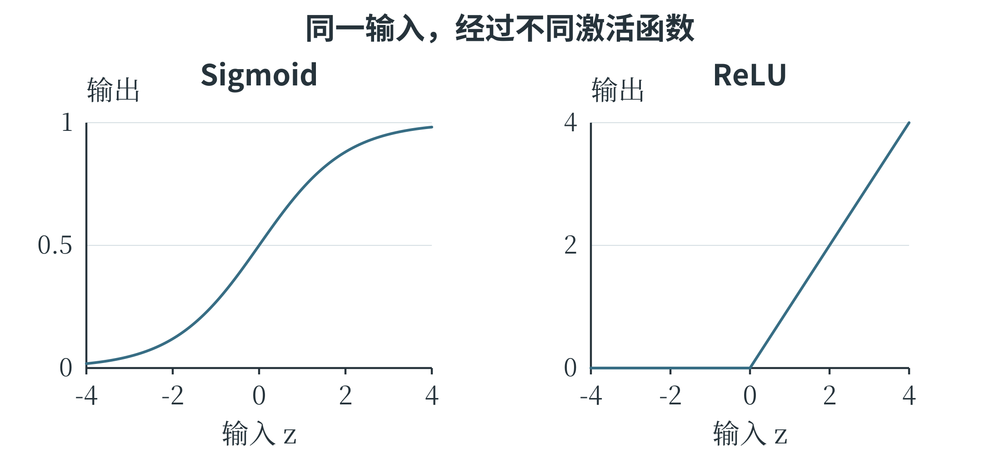
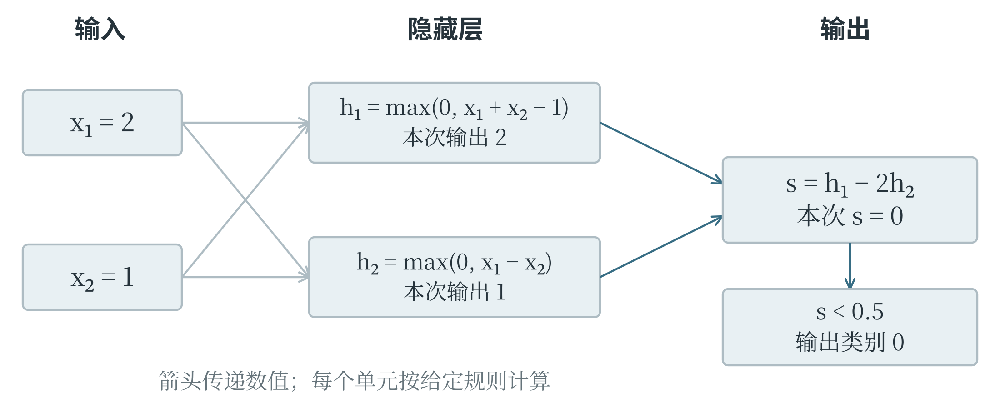
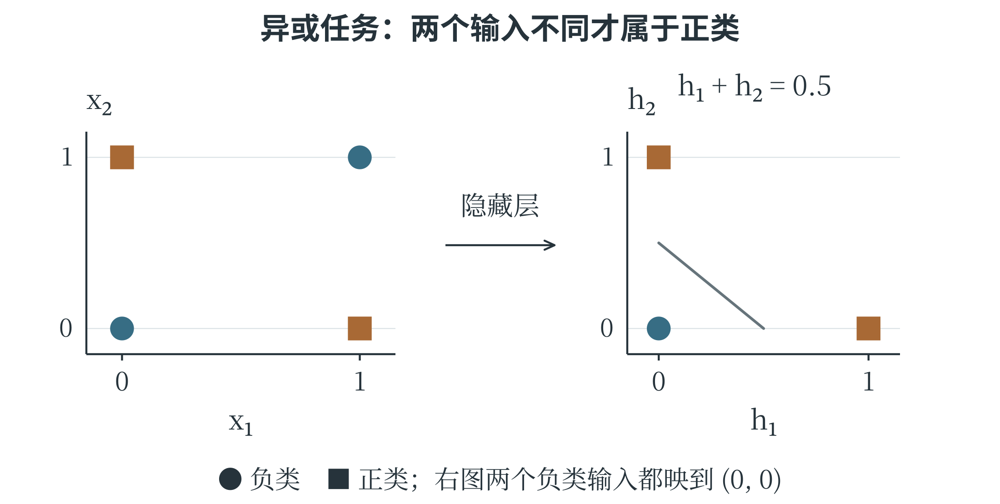

6.5 神经元与多层感知机
一个神经元的两步计算
人工神经网络由许多简单计算单元连接而成，这些单元称为人工神经元。它借用了生物神经系统中连接与传递的思想，但计算方式是数学模型，并不等于复制了真实神经细胞。一个常见神经元先对输入加权求和并加上偏置，再通过一个函数产生输出：
\(d\) 是输入特征数，\(z\) 是加权结果，\(f\) 称为激活函数，\(h\) 是该神经元的输出。激活函数规定加权结果怎样转换为下一层可用的数值。例如，阈值函数可以规定 \(z\geq0\) 时输出 1，否则输出 0。这种神经元能够表示一个简单的分类边界。下标从 1 到 \(d\)，表示对所有输入特征分别乘权重，再把结果相加；末尾的偏置只加一次。取 \(w_1=2\)、\(w_2=-1\)、\(b=-1\)，输入 \((2,1)\) 时，\(z=2\times2-1-1=2\)，阈值输出为 1。输入 \((0,1)\) 时，\(z=-2\)，输出为 0。权重不是输入本身，偏置也不对应额外测量值；它们决定计算规则，可以在训练中改变。
常见的 Sigmoid 函数写为 \(\sigma(z)=1/(1+e^{-z})\)，把实数平滑地映射到 0 与 1 之间。输入为零时输出 0.5，输入 2 时约为 0.881，输入 \(-2\) 时约为 0.119。它常用于二分类网络的输出，形成概率估计。函数形状和后续训练使这种估计成为可能，但仍需用数据检查它是否与实际发生频率相符。
ReLU 函数更简单，写为 \(f(z)=\max(0,z)\)：负数输出零，非负数原样输出。例如，输入 \(-2\)、0、3，输出分别为 0、0、3。ReLU 常用于隐藏层，它不会把正输出压到 1 以下。
神经元的输出并不总是 0 或 1。它输出什么，取决于所用的激活函数。
在同一条数轴上比较激活函数
Sigmoid 与 ReLU 接收的都是加权结果，但输出形状很不一样。图 6-8 中，Sigmoid 从靠近 0 的一侧平滑上升，在输入 0 处经过 0.5，随后逐渐接近 1；ReLU 在负数一侧贴着横轴，正数一侧沿斜率为 1 的直线继续增长。

例如，输入从 2 增加到 3，ReLU 输出增加 1，Sigmoid 输出只从约 0.881 增至约 0.953。Sigmoid 在两端比较平缓，输入改变较多，输出也可能只变一点；ReLU 在正数区间保持直接的数值变化。
import math
for z in [-2.0, 0.0, 2.0]:
sigmoid = 1 / (1 + math.exp(-z))
relu = max(0.0, z)
print(z, round(sigmoid, 3), relu)
# -2.0 0.119 0.0
# 0.0 0.500 0.0
# 2.0 0.881 2.0
这里的数字按三位小数说明近似值，print() 实际显示 0.5 时可能不保留末尾的零。若使用概率输出，仍需结合训练目标和数据检查结果；一个值落在 0 与 1 之间，本身不足以说明它已经具有可靠的概率意义。
让上一层的输出成为下一层的输入
神经网络中，输入层接收特征，隐藏层形成中间表示，输出层产生最终预测。具有一个或多个隐藏层、相邻层之间常采用全连接方式的前馈网络，称为多层感知机，简称 MLP。“前馈”表示本次计算按输入到输出的方向推进；“全连接”表示后一层的每个神经元接收前一层所有单元的输出。图 6-9 给出一个可以手算的两输入网络。隐藏层有两个采用 ReLU 的神经元，分别计算 \(h_1=\max(0,x_1+x_2-1)\)、\(h_2=\max(0,x_1-x_2)\)；输出层先算 \(s=h_1-2h_2\)，再规定 \(s\geq0.5\) 时输出 1，否则输出 0。这些权重与阈值是为说明逐层计算而给定的，尚未涉及训练。

输入 \((2,1)\) 时，\(h_1=2\)、\(h_2=1\)，所以 \(s=0\)，最终输出 0。输入 \((1,2)\) 时，\(h_1=2\)、\(h_2=0\)，所以 \(s=2\)，最终输出 1。两个样本的特征总和都是 3，第一个隐藏单元输出相同；第二个隐藏单元保留了二者的另一种差别，输出层于是能作出不同判断。中间表示如何组织信息，在这个例子中可以逐项看清。
def network(x1, x2):
h1 = max(0, x1 + x2 - 1)
h2 = max(0, x1 - x2)
score = h1 - 2 * h2
return int(score >= 0.5)
print(network(2, 1))
print(network(1, 2))
激活函数为什么重要，可以从连续两层都只做加权相加来看。第一层若算 \(h=2x+1\)，第二层算 \(y=3h-4\)，合起来仍是 \(y=6x-1\)。层数增加了，函数形式仍然是直线。一般地，只有线性变换和偏置的多层网络，可以合成一个同类变换；非线性激活让网络能够表示更复杂的关系。层数、每层的单元数量和激活函数，因此共同影响模型能够表达什么。每层的单元数量也常称为该层的宽度。利用较多层神经网络学习数据表示的方法，通常归入深度学习。它属于机器学习，机器学习又是人工智能的重要研究方向。神经网络的范围并不只包含深层网络，一个很浅的网络也可以用于学习；是否称为“深度”，没有对所有场合通用的简单层数分界。
隐藏层怎样表示一个弯折的判断
一个经典的小例子是“恰好有一项成立”。输入 \(x_1\)、\(x_2\) 各取 0 或 1，只有 \((1,0)\) 和 \((0,1)\) 输出 1，\((0,0)\) 与 \((1,1)\) 输出 0。这称为异或关系，含义与第三章讨论的“恰好满足一个条件”一致。在平面中，两类点交错位于正方形对角，无法用一条直线完全分开。
可以用两个隐藏单元分别计算两个方向的差：
输出层把 \(h_1+h_2\) 相加，规定不小于 0.5 时输出 1。四种输入的计算如下。
表 6-3 两个隐藏单元表示异或关系
| 输入 | h₁ | h₂ | 最终类别 |
|---|---|---|---|
| (0,0) | 0 | 0 | 0 |
| (1,0) | 1 | 0 | 1 |
| (0,1) | 0 | 1 | 1 |
| (1,1) | 0 | 0 | 0 |

两个输入相同时，两项差都不能留下正值；只有第一项较大时，第一隐藏单元响应；只有第二项较大时，第二隐藏单元响应。输出层再把两种情况合在一起。
这组参数说明，网络能够表示异或关系。怎样从样本中学到合适的参数，则是训练要解决的问题。
def xor_network(x1, x2):
h1 = max(0, x1 - x2)
h2 = max(0, x2 - x1)
return int(h1 + h2 >= 0.5)
for point in [(0, 0), (1, 0), (0, 1), (1, 1)]:
print(point, xor_network(*point))
调用里的 *point 把元组的两项按位置交给两个参数，这里也可以写成 xor_network(point[0], point[1])。把模型写成函数后，输入、隐藏层结果与最终类别都可以单独检查。复杂网络虽然有更多单元，前向计算仍由这些有明确输入输出的步骤组成。
从前向计算到训练
按当前参数逐层得到预测，称为前向传播。训练时还要计算损失，再确定每个参数怎样调整，才能减小损失。反向传播依据求导规则，从输出端逐层计算损失对各参数的变化率；优化器再利用这些变化率更新参数。
反向传播计算梯度，优化器使用梯度来改参数。这是训练中前后衔接的两步。
网络输出形式要与任务匹配。回归可以输出一个不受 0—1 限制的数；二分类可以用一个 Sigmoid 输出；多个互斥类别可以输出多个分数，再用 Softmax 转成相加为 1 的概率分布。Softmax 的第 \(j\) 个输出为 \(e^{z_j}/\sum_ke^{z_k}\)，其中 \(z_j\) 是这一类的原始分数。若两个分数都是零，输出各为 0.5；分数较大的一类得到较大的份额。它与每个位置单独使用 Sigmoid 的方式不同。
一个网络的权重和偏置通常在训练开始时初始化，再随数据更新。隐藏层宽度、层数、学习率等属于超参数。训练需要成批数据、明确的目标和足够计算资源；把网络图画得更深，并不会自动提高泛化能力。